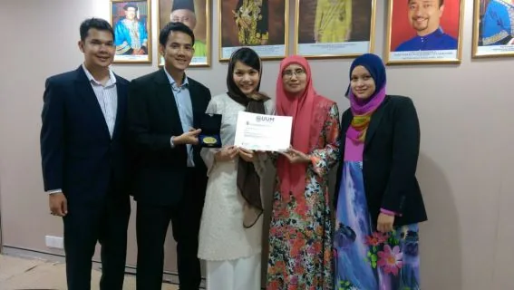
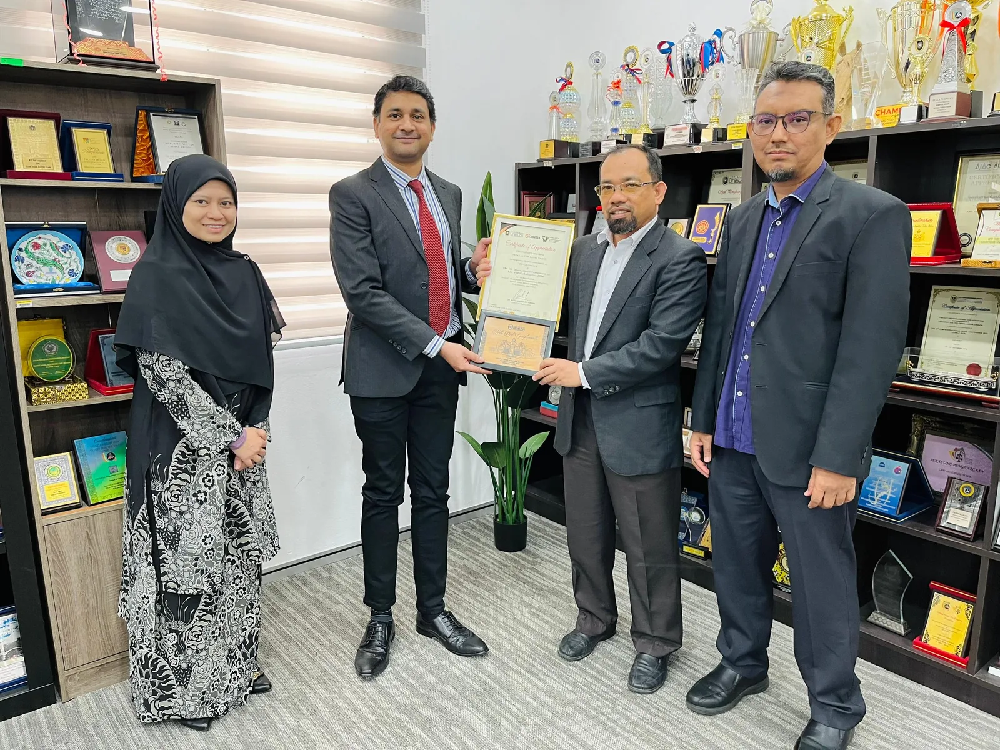
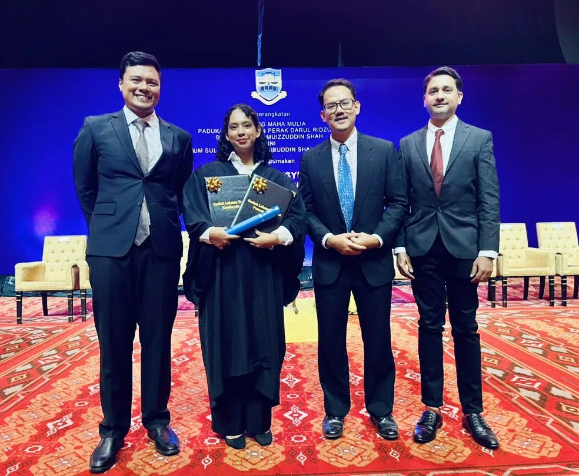

Certificate in Legal Practice
Annual RM10,000 prize for the Best Overall Student in the CLP examinations.
Since 1997OUR WORK
YTAH’s work brings together legal education, academic recognition, institutional partnerships and practical acts of assistance.
LEGAL EDUCATION
Since 2010, YTAH has actively granted cash bursaries and laptops to approximately 170 undergraduate Law students. Support is intended to reduce the practical financial pressures that can stand between a capable student and a legal education.
ACADEMIC EXCELLENCE
YTAH collaborates with legal and higher-education institutions to recognise outstanding performance. Its longest-running programme is the annual Best Overall Student prize for the Certificate in Legal Practice examinations, sponsored since 1997 and currently valued at RM10,000.
Explore the CLP Prize →INSTITUTIONAL PARTNERSHIPS
Annual RM10,000 prize for the Best Overall Student in the CLP examinations.
Since 1997Gold medal and RM1,000 cash prize for the highest achiever, alongside bursary and laptop assistance.
Since 2013Best LL.B (Hons) Student Award, annual bursaries and support for a student hub for Law clubs and associations.
Since 2023


SMALL STEPS
Friends of the Yayasan initiated Small Steps as a way to provide gentle, practical assistance while intentionally minimising publicity and protecting recipients’ privacy.
Discover Small Steps →